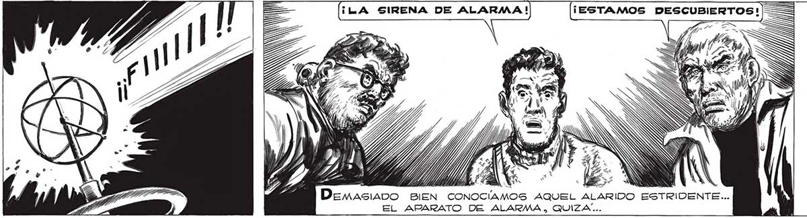
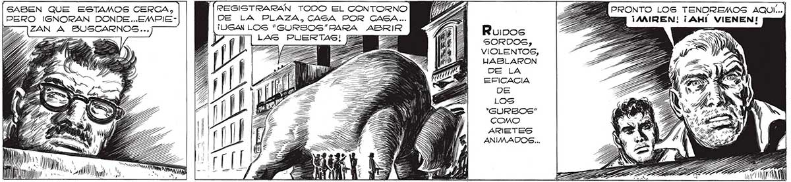

276 > ¡LA SIRENA DE ALARMA ! | ) IA => ... REFORZADA SU POTENCIA POR “DDR ACTUAR EN UN Ñ 2 ESPACIO AHORA LIMITADO POR EL CAMPO DE FUERZA QUE ENVOLVÍA LA PLAZA COMO UNA INVISIBLE CÚPULA, HABÍA TERMINADO POR DESCUBRIR QUE ALLÍ CERCA, A POCOS METROS... .DEL“CORAZON” DE LA INVASION, HABIA TRES ENEMIGOS ARMADOS. TRES ENEMIGOS QUE DEBAN SER DESTRUIDOS EN EL ACTO... v/ DAA RRATZZA MiaAs veloces QUE NUNCA SE MOVIERON LAS MANOS SOBRE LOS TECL En TODAS DIRECCIONES PARTIERON GRUPOS DE HOMBREGS- ROBOTS... PO» 11/ _ á == e => Ps A p 1d —=» o . e SABEN QUE ESTAMOS CERCA, Í(REGISTRARAN TODO EL CONTORNO PERO IGNORAN DONDE...EMPIE- DE LA PLAZA, CASA POR CASA... ¡USAN LOS “"GURBOS”"PARA ABRIR LAS > TEN PRONTO LOS TENDREMOS AQUÍ...| ¡AAIREN! ¡AHÍ VIENEN! SORDOS, VIOLENTOS, HABLARON DE LA EFICACIA DE LOS 'GURBOS”" COMO ARIETES ANIMADOS... h MN ) ) )) ll V ds MM, IA

